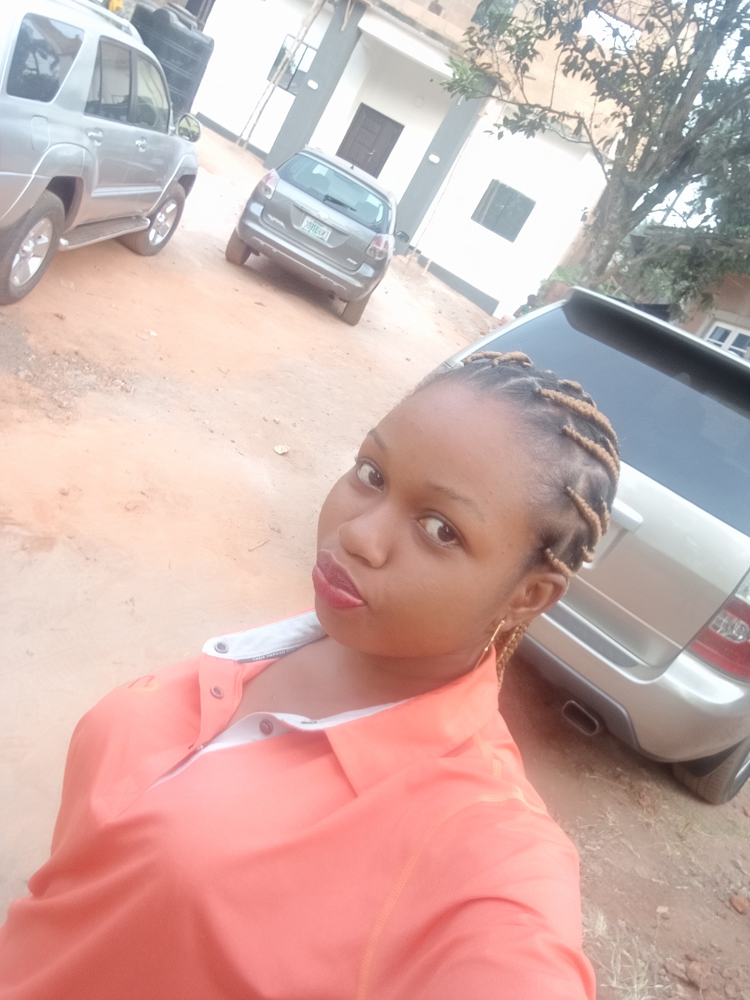

Name: Njeze Chidiogo Loveth
Sex: Female
Preferred track: Backend Engineering
My name again is Njeze Chidiogo Loveth and I have learnt a lot while creating my first webpage, i learnt how to:
During the program i encountered challenges with styling my documents with CSS, while watching how to style in the LMS, the tutor already wrote down some codes before the class started and that made it quite difficult for me to understand. I had to run to my teammates for help in Slack where i got solutions to my problems. Also along the line, i forgot how to use some elements like the list element, so i just went back to either the LMS video or my jotted notes to recall back. It was an awsome experience but i would love to improve in my styling. All thanks to Enugu SME and Altschool at large.